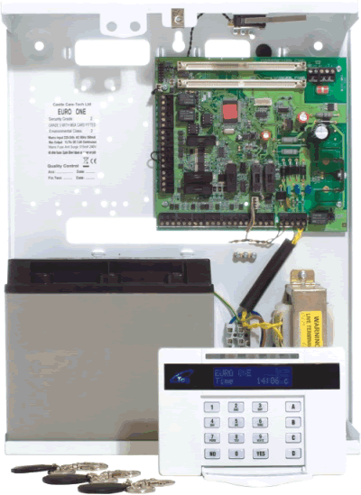

Seguridad física en equipos y servidores
Índice
- 1. Introducción
- 2. Acceso físico de personas
- 3. Condiciones climáticas y ambientales.
- 4. El entorno físico de un centro de proceso de datos (CPD)
- 5. Sujeción y factores de forma en entorno profesional: el Rack
- 6. Electricidad
- 6.1. La red eléctrica
- 6.2. Enchufes
- 6.3. Conectores y entradas normalizados (IEC)
- 6.4. Protección eléctrica
- 6.5. Cálculo aproximado del consumo eléctrico
- 6.6. Problemas en el suministro eléctrico
- 6.7. Regletas protectoras de sobretensiones.
- 6.8. Reguladores automáticos de voltaje (AVR)
- 6.9. Sistemas de Alimentación Ininterrumpida (SAI)
- 6.10. Grupos electrógenos
- 7. Referencias
1 Introducción
En este tema hablaremos de las amenazas se que presentan al hardware de una manera directa, es decir, desde un punto de vista absolutamente físico, y de las medidas de seguridad más comunes ante cada una de ellas.
Hablaremos desde el punto de vista de empresas que utilizan un esquema de servidores y estaciones de trabajo, que es una manera sensata de trabajar si se requiere escalar los sistemas y prestar atención a la seguridad de la información… aunque por supuesto, prácticamente todo lo que hablemos puede ser extrapolado a pequeñas empresas o pequeños sistemas basados en equipos únicos o grupos de trabajo sin servidores dedicados.
1.1 Estaciones de trabajo y servidores
Las empresas de producción de bienes y servicios suelen organizar su trabajo en base a estructuras estaciones de trabajo/servidores.
Las estaciones de trabajo (workstations), donde se sientan las personas, son considerados clientes, consumidores de servicios. Son ordenadores dedicados al usuario, y configurados de acuerdo a esta mentalidad. Algunos otros ordenadores, los servidores (servers), son configurados como prestadores de servicios a las estaciones de trabajo, a través de la red. En general, toda su capacidad debe dedicarse a ello. Es decir, los usuarios no deben trabajar en ellos directamente.
Figura 1: Esquema de red con un servidor
De esta manera, se centraliza la información en servidores, así como otros recursos compartidos:
- Aplicaciones internas
- Almacenamiento compartido
- Comunicaciones compartidas
- Otros recursos, como impresoras, etc.
Esta forma de organización centralizada aporta las siguientes ventajas:
- Implica mucho mayor control sobre la información (que se encuentra siempre en los servidores)
- Facilita las tareas de administración y configuración, ya que el mayor esfuerzo se centra en los servidores.
- Aumenta la seguridad (disponibilidad e integridad), ya que se centraliza también el foco de atención de la seguridad en los servidores.
- Con respecto a las estaciones de trabajo, como la información no reside generalmente en ellas, las tareas de seguridad pueden centrarse algo menos en la disponibilidad e integridad, y dirigirse hacia la confidencialidad.
Ser servidor o estación de trabajo es un papel. Un servidor es, básicamente, un ordenador en el que se decide que su misión va a ser prestar servicios a las estaciones de trabajo a través de la red. No es imprescindible hacer otras consideraciones de hardware o software. Cualquier ordenador puede ser un servidor: es decir, ser servidor es un rol, una función… y no una característica.
1.2 Grupos de trabajo (Workgroups)
Las instalaciones SOHO (Small Office/Home Office) pueden estar en un modelo de grupo de trabajo (workgroup), donde no hay servidores dedicados. En cada estación de trabajo se guarda información. Asimismo, cada estación de trabajo puede prestar servicios a las demás (compartir archivos, comunicaciones, impresoras…), y consumir servicios que prestan otras estaciones.
- Es un modelo cómodo para infraestructuras muy pequeñas
- Dificulta la administración, ya que las amenazas y configuraciones se descentralizan y multiplican.
- Aumenta los riesgos de las amenazas de seguridad, ya que quedan dispersas y multiplicadas por las estaciones de trabajo, que, en cierto modo se convierten también en servidores.
Figura 2: Esquema de red SOHO, sin servidor definido
2 Acceso físico de personas
Desde el punto de vista de la seguridad física, en algunos casos puede suponer una amenaza el acceso de personas no autorizadas a determinadas dependencias o instalaciones. El espacio donde se encuentra el hardware puede contar con restricciones físicas a las personas. Algunas serán correctivas y otras preventivas. Muchas de éstas restricciones nos son familiares:
- Puertas con algún tipo de cerradura
- Personal del vigilancia
- Cámaras
- Alarmas
2.1 Cerraduras
Las cerraduras con una llave pueden impedir el acceso de personas… pero más allá de la cerradura tradicional, otros sistemas de acceso como tarjetas, contraseñas o la biometría pueden realizar otras tareas como la autentificación y el control de acceso de las personas. Estas formas de acceso se basan en :
- Poseer algo (como una tarjeta, un llavero). Existen varias tecnologías, como las tarjetas magnéticas, los chips de radiofrecuencia, las tarjetas inteligentes etc.
- Saber algo (como una contraseña)
Figura 3: Control de acceso mediante PIN
- Ser algo: Exhibir algún rasgo o característica física intransferible: Biometría.
Figura 4: Control de acceso mendiante huella digital (biometría)
Trataremos estas tecnologías más adelante, en otro tema, cuando hablemos del acceso físico a los sistemas.
2.2 Personal de vigilancia.
Según la legislación Española, las tareas de vigilancia se encomiendan a un profesional vigilante o guardia de seguridad privada, que pertenecen obligatoriamente a una empresa de seguridad y siguen un proceso de selección y acreditación de acuerdo a normativa. “Se reserva al personal de seguridad privada estrictamente las funciones de vigilancia y seguridad activa de bienes y personas –diurna y nocturna- y el control de sistemas de seguridad; entendiéndose por vigilancia y seguridad activa aquella que incluye la posibilidad de repeler cualquier agresión al bien que se vigila”
Figura 5: Personal de vigilancia
Principalmente, sus funciones se centran en:
- Control de accesos cuando existan mecanismos de seguridad incorporados contra la comisión de infracciones o limitación de la entrada de determinadas personas.
- Control de sistemas de seguridad contra la comisión de delitos y faltas
- Vigilancia y seguridad de los bienes y las personas que se encuentren en los inmuebles con posibilidad de represión.
2.3 Cámaras de seguridad
Las cámaras son una medida típicamente pasiva, ya que en general, su misión es grabar lo sucedido, de tal manera que si se produce un ataque, se pueda reducir su impacto.
Figura 6: Cámara de vigilancia
A veces, la cámara no solo graba, sino que un vigilante de seguridad puede estar viendo en tiempo real lo que sucede en otras dependencias, y en ese caso, impedir un ataque. En ese caso, la cámara junto con el vigilante forma un mecanismo de seguridad activa… pero la cámara por sí sola no tiene esa clara vertiente de seguridad activa.
2.4 Alarma contra intrusos.
Es un sistema encargado de detectar la intrusión de personas no autorizadas o por medios no autorizados al recinto, especialmente durante horas en las que no debe haber personas en él.
Consta de:
- Un módulo central, que es básicamente un ordenador con software (recibe comúnmente el nombre de “central de alarma”)
- Una consola con teclas que activa y desactiva el sistema de detectores y que permite una interacción con la central de alarma
- Detectores de presencia, que utilizan microondas, ultrasonidos o sondas de temperatura. Según el tipo detectan cambios de volumen del aire o temperatura.
- Detectores de apertura de puertas, rotura de ventanas, etc.
- Una batería auxiliar, que proporciona corriente en el caso de un corte de energía (Intencionado o fortuito)
- Puede haber pulsadores de emergencia, normalmente disimulados que disparan la alarma
- Una sirena y luces con intención disuasoria
|  |
La alarma está conectada a la línea telefónica, con el fin de mandar un aviso a la empresa de seguridad responsable de la alarma (Que sabe qué cliente tiene apuros por el CALLER-ID, identificador de llamada) y en algunos casos también mensajes pregrabados (a policía, etc…) También suelen estar conectadas de manera redundante a través de redes de telefonía móvil.
Es conveniente tener en cuenta algunos mitos, que son rotundamente falsos:
- Cualquier alteración de los sensores (ej: intentar romperlos o manipularlos) dispara la alarma
- Los sensores láser no existen en la realidad: sólo en el cine y la TV.
- Si una cerradura electrónica está conectada a la central de alarma, su rotura o manipulación abre la puerta, sin disparar primero la alarma.
Los sensores, pulsadores suelen estar conectados en estrella:
- Una configuración en BUS abarata costes y simplifica la instalación, pero reduce la seguridad.
- Las conexiones inalámbricas sufren interferencias de manera mucho más frecuente que el cable, así que no se suelen utilizar
3 Condiciones climáticas y ambientales.
Aunque el hardware, en general puede operar correctamente en diversas condiciones ambientales, es conveniente mantenerlo en una franja concreta de éstas. Los factores que más afectan a la electrónica son temperatura, humedad y polvo
3.1 Temperatura
Los equipos electrónicos de consumo pueden funcionar correctamente con una temperatura ambiental del aire en un rango de 10 a 32ºC. Generan bastante calor interno, con lo que es conveniente que el ambiente en el que se encuentran esté lo más fresco posible. Si los equipos conviven con personas, pueden estar perfectamente a las temperaturas en las que vivimos las personas. Si se encuentran aislados (por ejemplo, en un cuarto de servidores o un datacenter) podría ser conveniente mantenerlos a baja temperatura, pero no es realmente necesario y el gasto energético de bajar la temperatura podría ser muy elevado, así que mantenerlos a unos 22ºC ya se consideraría adecuado.
En las salas aisladas de un datacenter, por normativa internacional, la temperatura promedio en el ambiente debe ser de 22.3ºC. Por lo general, esta temperatura es menor y se acerca a los 10ºC.
Ten en cuenta, que en estos rangos de temperatura, hablamos de la temperatura del aire de la habitación. En el interior de los ordenadores el aire estará más caliente.
3.2 Humedad
El aire contiene una pequeña cantidad de agua en estado gaseoso (o incluso líquido en suspensión). La cantidad de vapor que contiene el aire en un instante dado con respecto al máximo que puede contener es la es la humedad relativa. Se expresa con un tanto por ciento. Si la humedad es del 100%, quiere decir que el aire contiene la máxima cantidad de vapor que puede llevar disuelto antes de expulsarlo en forma líquida. La humedad máxima varía con la temperatura. La relativa, por lo tanto, también. Para los equipos electrónicos, es conveniente mantenerla entre el 40% y el 50% con respecto a la humedad máxima. En ningún caso se recomienda el funcionamiento de material electrónico con una humedad superior al 80%
En ambientes de humedad alta, puede eliminarse humedad mediante deshumidificadores, que condensan el agua del aire, la devuelven al estado líquido haciéndolo pasar por una rejilla fría. Los deshumidificadores pueden conectase a un desagüe para evacuar el agua en estado líquido.
Figura 7: Deshumificador doméstico
3.3 Polvo
El polvo son partículas sólidas de todo tipo en suspensión (fibras, tierra, pelos y piel de animales y humanos, polen, resinas…) . Es un gran enemigo de los sistemas informáticos:
- Recubre los circuitos y propicia la acumulación de humedad, provocando óxido o desperfectos relacionados con la electricidad.
- Se adhiere a dispositivos lectores (Ej: los cabezales de dispositivos ópticos).
- Se adhiere a piezas móviles (Ej: Ventiladores, motores de dispositivos ópticos, ratones, y todo tipo de periféricos)
Si en nuestras instalaciones el polvo supone un problema, se puede paliar con filtros de partículas. El filtro es básicamente una malla de fibras por la que se fuerza el paso del aire mediante ventiladores. Las partículas de polvo quedan adheridas al filtro y cuando está muy sucio se limpia o se cambia.
Hay que tener en cuenta que los sistemas de climatización de los CPD, el aire acondicionado ya incluye filtro de partículas y deshumidifica por el propio enfriamiento.
Figura 8: Filtro de polvo y partículas
Algunos equipos pueden aislarse en un recinto hermético, de tal manera que toda la circulación de aire esté controlada, y la mayor parte del aire pase por un filtro.
3.4 Agua
Es necesario tomar algunas precauciones absolutamente evidentes con respecto a pequeñas fugas de agua:
- Los baños y salidas de agua deben situarse a distancia de las salas que alojen hardware. Si no es posible, debe contarse con sistemas de desviación y absorción (Ej: desagües)
- El hardware debe estar alejado de ventanas y otras posibles fuentes de filtraciones.
- En general, nunca debe apoyarse directamente sobre el suelto, sino elevado sobre éste.
3.5 Fuego
El fuego es una amenaza mucho más seria de lo que puede parecer en un primer momento. Las averías eléctricas son fuente frecuentemente de pequeños incendios. La mayor parte de éstos pequeños incendios pueden ser controlados, pero si no lo son, un fuego puede extenderse y descontrolarse rápidamente.
Vamos a hablar de algunas medidas de seguridad comunes con respecto al fuego.
3.5.1 Barreras
Algunos muros están construidos con especial resistencia al fuego, para evitar que se propague. Contienen materiales aislantes e incluso refrigerantes. Se sellan sus resquicios con masillas y siliconas ignífugas
Las puertas cortafuegos son para el paso de personas. Se cierran solas con algún mecanismo de muelle y tienen unas palancas para abrirlas
Suelen estar clasificadas con un rótulo “DF” seguido del número de minutos que resisten un fuego directo (Ej: una puerta DF-30 resiste 30 minutos de fuego directo)
Figura 9: Puertas de seguridad antiincencios
Las compuertas cortafuegos se colocan en conductos (ventilación, aire acondicionado, calefacción). Impiden que el fuego se propague por estos medios Su cierre es automático.
Figura 10: Compuertas antiincencios para conductos de calefacción
3.5.2 Detectores:
Hay de varios tipos. Se sitúan en partes altas. Están conectados a la central de alarma
La central de alarma del edificio puede estar dedicada a la detección y extinción de incendios, o bien puede ser la misma central de alarma que se utilice para la detección de intrusos (en ese caso se llaman sistemas mixtos -es lo más común-). En cualquier caso, la central de alarma hará una o más de éstas acciones:
- Disparar una sirena para avisar de la detección del fuego
- Disparar sistemas de extinción automáticos (como agua nebulizada)
- Avisar a una empresa de seguridad mediante la línea telefónica fija o móvil.
- Avisar a un servicio de emergencia (tipo 112) mediante un sistema pregrabado.
Figura 11: Detector de humo
3.6 Sistemas de extinción.
- Automáticos: En muchos entornos en los que hay instalados ordenadores se cuenta con sistemas de extinción automáticos instalados en el edificio y sus dependencias.
- Principalmente se basan en esparcir algún agente extintor en el ambiente, como el agua nebulizada,
- Puede sustituir el oxígeno del aire por algún otro gas que impida la combustión, como gas inergen (una mezcla de nitrógeno, argón y CO2)
- Los gases limpios (HF's, como el FE13 y el FM200) actúan directamente sobre el fuego a concentraciones relativamente bajas. Se almacenan como gases licuados y apagan el fuego por enfriamiento de la llama. Tienen menor toxicidad que el CO2 y no afectan a la capa de ozono.
- También son gases de este tipo los hidrocarburos halogenados, derivados del gas halón, utilizados durante mucho tiempo, pero actualmente prohibidos por su efecto sobre la capa de ozono.
Figura 12: Aspersor para la extinción automática de incendios
- Manuales: Basados en la dispersión manual de algún agente…. Es decir, utilizar “extintores”.
Figura 13: Extintores manuales
3.7 Tipos de fuego.
Hay varios tipos de fuego, según el material que esté ardiendo. Los más comunes son:
- Tipo A: Material combustible sólido, como madera, papel, etc… que forma brasa
- Tipo B: Líquidos altamente inflamables (alcohol, gasolina, aceites)
- Tipo C: Gases inflamables (butano, propano, gas natural)
Además, es posible que se presente el fuego donde pueden haber cargas eléctricas, así que hablamos de fuego con riesgo de electrocución. (Antiguamente llamado Tipo E. Ya no se llama así): Materiales que conducen, producen o almacenan corriente (ej: Baterías, SAIs, cables).
3.8 Agentes extintores
Los principales agentes extintores para uso manual son:
- CO2: Se trata del dióxido de carbono, un gas que no es peligroso para los humanos en bajas concentraciones. Es adecuado para fuegos A y B, y algo menos para el C.
- Polvo polivalente ABC: se trata de un agente en polvo adecuado para fuegos de tipos A, B y C
Con respecto al fuego con riesgo de electrocución el CO2 es adecuado, pero el polvo ABC no siempre. En el caso de utilizar un extintor de polvo polivalente ABC es necesario asegurarse de que esté certificado su uso en caso de riesgo de electrocución.
Los principales agentes extintores para uso automático son:
- Agua nebulizada. Puede dañar equipos. Es necesario tomar precauciones ante riesgo de electrocución
- Gases eliminadores del oxígeno. Tradicionalmente se han utilizado derivados del gas halón, pero dañan la capa de ozono. Existen soluciones alternativas, como el gas inergén.
3.9 Vías de evacuación y señalización.
Distintas normas europeas indican cómo debe ser la señalización referida a los incendios. En todos los casos se trata de señales verdes que se colocan en partes altas.
Figura 14: Señalización de las vías de evaluación
4 El entorno físico de un centro de proceso de datos (CPD)
Un Centro de Proceso de Datos (CPD) es una instalación que alberga un sistema principal de redes, ordenadores y recursos para procesar toda la información de una empresa u organismo (o varios) Otros nombres: Centro de cálculo, Datacenter.
Los hay muy grandes, propiedad de las grandes empresas tecnológicas con muchos miles de servidores y mucha capacidad de almacenamiento (Google, Amazon, Microsoft, etc)… Los hay muy pequeños, propiedad de pequeñas empresas de producción de bienes y servicios o tecnológicas, con unas pocas decenas de servidores… y los hay de cualquier tamaño intermedio.
A veces, los datacenter son de uso exclusivo de una única empresa, y en otras ocasiones, se “alquilan” sus servicios, de tal manera que cualquier empresa pueda contratar servicios en el datacenter de Google.
Eso ocurre con los datacenter grandes (Ej: Amazon web services,Microsoft Azure… )… o con los datacenter más pequeños (Ej: Nexica, fatcow -un proveedor de hosting-)
Figura 15: Datacenter de Google en Montain View, California, EEUU. 45000 servidores
I
Figura 16: Interior del Datacenter de un proveedor de hosting y servicios web (ThePlanet)
Vamos a comentar acerca de los principales factores de riesgo que pueden suponer amenazas a la seguridad física, junto con las medidas de seguridad más habituales. -Electricidad (cortes, inestabilidad)
- Acometidas duplicadas, de distintas compañías, de tal modo que se reduzca la probabilidad de que dos o más produzcan problemas simultáneamente.
- SAIs. Generan energía durante un tiempo muy limitado.
- Grupos electrógenos (generan electricidad quemando gasóleo). Tienen un tiempo de arranque considerable y un mantenimiento complicado. (El tiempo de arranque de un grupo electrógeno puede compensarse con un SAI. Si no se dispone de él, es necesario tener en cuenta el tiempo que tarda el grupo en porporcionar corriente)
- Incendios
- Alarmas detectoras de incendios (normalmente, conectadas a una empresa de seguridad).
- Extintores automáticos y manuales.
- Sistemas mixtos de alarmas(Un sistema mixto es sistema de alarma contra intrusos que también gestiona la detección del fuego)
- Redes internas (lan)
- Duplicación de redes
- Redes externas (wan)
- Duplicación de proveedores
- Climatización (temperatura, humedad, polvo)
- Control ambiental con refrigeración, deshumidificadores, filtros de polvo
- Acceso físico de personas
- Vigilantes de seguridad 24 horas
- Control del perímetro y zonas interiores mediante cámaras o vigilantes de seguridad
- Puertas con acceso controlado y blindadas en las áreas más críticas
- Tarjetas, llaves, contraseñas, sistemas biométricos.
Con respecto a la propia construcción de un CPD, se suelen tener en cuenta algunas características peculiares del edificio:
- Suelos con alta capacidad de carga (las máquinas pesan mucho)
- Doble suelo para evitar electrocución e inundación
- Construcción antisísmica (resistente a movimientos de tierra)
- Paredes con tratamiento ignífugo
- Aislamiento térmico en muros y ventanas
- Bahías de carga (para la entrada y salida de material voluminoso)
- Puertas y compuertas antifuego
También es importante en algunos casos, decidir dónde y cómo ubicar las instalaciones, teniendo en cuenta aspectos como:
- Coste del terreno
- Servicios
- Suministros eléctricos
- Poca probabilidad de catástrofes naturales, etc.
- Transporte
Por último, una consideración acerca de la duplicación de sistemas en un Datacenter. Ya hemos comentado que en los CPD es común duplicar algunos sistemas, como las acometidas de electricidad o las redes. En algunos casos, se opta por duplicar completamente el centro, en otras instalaciones alejadas, de tal manera que tengan los mismos datos y el mismo funcionamiento, para que en caso de fallo en un datacenter, el otro siga operativo.
5 Sujeción y factores de forma en entorno profesional: el Rack
El armario RACK es la forma estándar de configurar instalaciones de hardware formados por múltiples dispositivos. Está respaldado por varias organizaciones de estándares.
Un armario RACK común mide 19” (pulgadas) de ancho (482.6mm) en la parte interior. Es decir… por fuera es algo más ancho, pero los aparatos que encajan dentro miden 19” de ancho. Incluye dos raíles laterales en la parte frontal con perforaciones para sujetar aparatos. Los dispositivos van sujetos sólo por delante.
Figura 17: Armarios rack
La altura de los dispositivos que se montan en rack es múltiplo de una unidad llamada “U” (Una pulgada y tres cuartos, es decir… 1.75 pulgadas… o sea… 4.5 cm aproximadamente).
Figura 18: Dimensiones de los railes de un rack
Pueden existir raíles también en la parte del fondo, para sujetar equipos pesados, o especialmente bandejas sobre las que colocar dichos equipos.
La medida del fondo no está normalizada, aunque son comunes medidas como 600, 800 y 1000 mm.
Los armarios rack suelen anclarse en el suelo con pernos para que no se deslicen. Es necesario asegurarse de que el suelo va a resistir el peso del rack y su contenido.
Figura 19: Dispositivos de anclaje al suelo
Los armarios RACK sirven normalmente para contener:
- Ordenadores servidores
- Dispositivos de comunicaciones (routers, switches, patchpanels)
- Dispositivos de almacenamiento masivo TIPO RAID
- Suele también ponerse hardware y otros dispositivos de seguridad
- SAI (en la parte inferior, por el peso)
- Ventiladores/Disipadores/Filtros de aire (en la parte superior, por el calor)
- La toma de corriente eléctrica (es decir, una regleta con enchufes… pero de 19” de ancho y 1U de alto) se instala en la parte inferior.
Casi todos los aparatos integrados en un Rack se manejan por red. Es poco habitual incluir monitores y/o teclados, pero es posible
La versión mural del armario RACK está pensada para pequeños dispositivos de comunicaciones (switches, hubs, patchpanels, routers y cables)
Figura 20: Pequeño armario rack, adecuado para instalación mural
Los dispositivos de comunicaciones suelen servirse en varios factores de forma.
- El comúnmente llamado SOHO (Small Office, Home Office), sin forma estándar y normalmente de sobremesa
Figura 21: Switch/router SOHO de sobremesa (no enracable)
- En formato para rack, de 19”
Figura 22: Switch enracable
Con los ordenadores pasa lo mismo, aunque estemos poco habituados.
- Los ordenadores de escritorio SOHO y estaciones de trabajo suelen venir montados en cajas de pie con factores de forma ATX µATX, ITX y algunas otras.
Figura 23: Servidor de sobremesa, no enracable
- Los servidores, en un rack de 19” tienen al menos dos factores de forma específicos en sus cajas: Pizza box y Blade
Un servidor en factor de forma pizza box es la forma más simple de caja para rack: 19” de ancho y 1U de alto. Es un ordenador completo autocontenido con su fuente de alimentación, red, dispositivos de E/S y almacenamiento, etc Las conexiones van atrás. En el momento actual… en una caja pizza box pueden ir varios ordenadores completos.
Figura 24: Servidor tipo pizza box
Los servidores Blade no están completos. Encajan en un contenedor (“vaina”, “horno”) que es la que se monta en rack. Ese contenedor centraliza algunos servicios, normalmente alimentación, comunicaciones, y en algunos casos E/S y almacenamiento
Figura 25: Servidor tipo blade
Es común encontar también dispositivos RAID montados en rack. Como ya sabes, se trata de un sistema de discos redundantes, en el que se permite el fallo de un disco sin perder la información. Cuando un disco falla, en los sistemas profesionales, puede sustituirse “en caliente”
Un equipo RAID para rack mide, por supuesto 19” de ancho y un múltiplo de “U” de alto, Tiene huecos para almacenar varios discos duros. Cada disco va montado en una bandeja (llamada caddy), que permite su montaje y extracción de manera rápida e independiente. Cuando un disco falla, el sistema avisa… y se sustituye por uno nuevo de idénticas características. Todo el conjunto funciona como un único disco de red.
Figura 26: Equipo RAID enracable
6 Electricidad
6.1 La red eléctrica
En España, el suministro de corriente eléctrica se hace con corriente alterna (que es la forma de transportar corriente a largas distancias, con éstos parámetros fijos: Tensión: 230 Volts (Con ±10V de oscilaciones permitidas, es decir, entre 220 y 240 Volts) Frecuencia: 50 Hertz
Los dispositivos electrónicos (ordenadores, periféricos, comunicaciones…) utilizan corriente continua, así que la corriente alterna se transforma en continua en cada dispositivo, mediante fuentes de alimentación o transformadores.
6.2 Enchufes
En España se utilizan básicamente dos tomas de enchufe: Schuko y Europlug, ambas normalizadas por la CEE, para suministrar corriente alterna.
Los dispositivos que necesitan corriente continua, disponen de una fuente de alimentación (un transformador), que se conecta a enchufes Schuko o europlug mediante los conectores IEC, normalizados a nivel internacional.
6.2.1 Schuko
Schuko es el nombre coloquial, aunque absolutamente aceptado, de un sistema de enchufe y toma de corriente (que se define en el estándar CEE 7/4 Tipo F). "Schuko" es la forma abreviada del término alemán Schutzkontakt (literalmente: contacto protector), lo que sencillamente indica que tanto el enchufe como la toma están equipados con contactos de protección a tierra (en foma de ganchos laterales en lugar de clavijas). Los conectores Schuko se usan normalmente en circuitos de 230 V, 50 Hz y para corrientes no superiores a 16 A.
Figura 27: Enchufe schuko
(En el sistema francés y belga, utilizan un conector y enchufe similar, pero que tiene una tercera patilla para la conexión a tierra, en lugar de ganchos. Algunos enchufes schuko son compatibles con éste sistema.)
6.2.2 Europlug
La Europlug es una clavija de enchufe plano de dos polos, diseñada para corrientes de hasta 2,5 A. Fue ideada para funcionar, de forma segura, en las tomas de corriente de todos los paises europeos, con excepción del sistema que se usa en Gran Bretaña, Chipre, Gibraltar, Irlanda y Malta. Se puede enchufar en tomas de corriente schuko.
Figura 28: Enchufe europlug
6.3 Conectores y entradas normalizados (IEC)
Los fabricantes de dispositivos, para abaratar costes, mantener la compatibilidad eléctrica y las características de seguridad han optado por utilizar en las fuentes de alimentación y transformadores una serie de conectores y entradas de corriente normalizados.
Existen varios tipos de conectores y entradas normalizados, aunque en informática se utilizan básicamente cuatro.
Los fabricantes de aparatos electrónicos optan por colocar una entrada de corriente en el aparato, y utilizar un cable de alimentación que por un lado lleve un enchufe Schuko o Europlug, y por el otro un conector parejo a la entrada. En otros paises, puede utilizarse la misma fuente con conector IEC y otro cable de alimentación adaptado al sistema del país.
Los conectores utilizados en la CE están normalizados por la norma IEC 60320 (International ElectrotechnicalCommision).
Los conectores y entradas IEC se denominan por una letra “C” y un número. Los números impares corresponden a un conector, y los pares a una entrada. La entrada siempre presenta “pines” al descubierto, mientras que el conector dispone de agujeros en los que encajan los pines.
Es decir…: En los conectores y entradas IEC
| Conector | Da corriente |
|---|---|
| tiene agujeros | |
| está en el cable de corriente | |
| No lo toques | |
| Entrada | Toma corriente |
| tiene pines | |
| está en la fuente de alimentación | |
| Si ves los pines, es porque no está el conector. No hay corriente. |
- C5/C6: 2.5 amperes máximo con toma de tierra. (Apodado “Mickey Mouse” o “Hoja de trébol”) Se utiliza en portátiles.
Figura 29: Conector C5
- C7/C8: 2.5 amperes máximo sin toma de tierra. (Apodado “El 8” o “la escopeta”). Se utiliza en periféricos y dispositivos de comunicaciones.
Figura 30: Conector C7
- C13/C14: 10 A máximo con toma de tierra. Se utiliza en ordenadores de sobremesa, monitores, periféricos, sais, etc.
Figura 31: Conector C13
- C19/C20: 16 A máximo con toma de tierra. Se utiliza en grandes instalaciones. Servidores y SAIs de alta potencia
Figura 32: Conector C19
Más información en la página de wikipedia sobre conectores IEC.
6.4 Protección eléctrica
La red eléctrica proporciona tensiones nominales de entre 220 y 240V La potencia que suministra la red (kiloWatts – kW) se estipula por contrato.
6.4.1 El Interruptor de Control de Potencia.
La instalación eléctrica debe ir acorde a la potencia suministrada. Un Interruptor de Control de Potencia (ICP) se coloca a la entrada del suministro, después de los contadores para garantizar que no se consume más allá de la potencia contratada. Hay uno a la entrada de cada cliente. Se coloca más para control de consumo que para seguridad.
6.4.2 Los interruptores magnetotérmicos
Protegen un circuito. Cada uno admite una determinada corriente máxima, que se mide en Amperes (A). Los magnetotérmicosvienen marcados con la letra “C” -de Current, corriente- y una cantidad, que indica el paso máximo de corriente que permiten “C16 → 16 Amperios máximo”. Saltan ante cortocircuitos y consumo excesivo (sobrecarga del circuito) Es capaz de interrumpir la corriente eléctrica de un circuito cuando ésta sobrepasa ciertos valores máximos (Que se expresan en amperios)
Figura 33: Mangetotérmico doble
Figura 34: Magnetotérmico simple
(NOTA: no confundas el hecho de que un magnetotérmico pueda estar rotulado como C16 con el conector IEC C16, que obviamente, no tiene nada que ver)
La desconexión magnética protege de los cortocircuitos y la térmica de las sobrecargas
Un exceso de corriente se puede producir:
- Porque realmente estamos demandando mucha corriente, al enchufar al circuito demasiados dispositivos
- Porque se produce un mal funcionamiento (cortocircuito).
En el primer caso, basta calcular aproximadamente el consumo de los aparatos de un circuito y desconectar algunos hasta no sobrepasar la capacidad del magnetotérmico
En el segundo caso, rastreamos el origen del mal funcionamiento: Si es un dispositivo, se desconecta y se sustituye Si es en la instalación, se deja en manos de un electricista
Se pueden colocar varios magnetotérmicos jerárquicamente (ej: uno en una oficina, otro en la planta, otro en la entrada del edificio)… En general, ante un problema salta siempre el más cercano al problema, y que además dejará pasar menos cantidad de corriente.
6.4.3 El interruptor diferencial
Se coloca en las instalaciones eléctricas con el fin de proteger a las personas de las derivaciones causadas por faltas de aislamiento entre los conductores activos y tierra o masa de los aparatos. Lo distinguirás fácilmente por el botón marcado con una “T”.

Figura 35: Diferencial
Los interruptores diferenciales suelen instalarse en menor cantidad, y protegen varios circuitos de posibles fugas de corriente.
El botón “T” (de Test) sirve para comprobar que funciona correctamente, ya que son propensos a averías.
6.4.4 La toma de Tierra.
La instalación eléctrica, además de los dos cables que traen la corriente alterna cuenta con un tercero conectado a tierra. (La FASE –que siempre es rojo, marrón o negro- es el conductor que realmente trae la potencia. El NEUTRO, que siempre es azul es realmente el retorno del circuito. No transporta corriente si no se cierra el circuito con la fase. La TIERRA –en amarillo y verde- está conectado a un gran clavo en los cimientos del edificio.
El enchufe schuko garantiza las fugas a tierra de corrientes descontroladas y estáticas en aquellos aparatos construidos de manera adecuada para ello.
6.4.5 Doble aislamiento
Algunos aparatos disponen de un doble aislamiento de sus partes activas (tanto neutro como fase). En ese caso, no requieren conexión a tierra. Van marcados con éste símbolo en su carcasa. Pueden llevar un enchufe Europlug o Schuko sin toma de tierra.
Figura 36: Símbolo de doble aislamiento
Figura 37: Enchufe schuco válido para equipo con doble aislamiento (sin tierra)
6.4.6 Adaptadores, ladrones, regletas
En ningún caso están especialmente recomendados los “adaptadores”, “ladrones” o regletas de corriente si pueden evitarse. Pero es necesario tener en cuenta que NUNCA DEBE UTILIZARSE UN ADAPTADOR CON ENTRADA EUROPLUG Y CONECTOR SCHUKO. Ya que permitiría enchufar aparatos con enchufe Schuko (de hasta 16A), cuando una entrada europlug solo está certificada para 2.5A.
| Entrada | Conector | Intensidad | |
|---|---|---|---|
| Schuko | Europlug | Hasta 2.5A |  |
| Schuko | Schuko | Hasta 16A | |
| Schuko | Schuko y Europlug | Hasta 16A (en schuko) | |
| ¿Europlug? | Compatibles con Schuko. | No permitido |
6.5 Cálculo aproximado del consumo eléctrico
Todos los circuitos eléctricos permiten un consumo máximo instantáneo de corriente, expresado en Amperios. En última instancia, si lo sobrepasamos, el interruptor magnetotérmico que protege el circuito saltará, debido al exceso de demanda de corriente. La demanda eléctrica máxima de un dispositivo debe venir indicada por el fabricante del mismo, expresada en Amperes (Amperios)… o bien, el consumo expresado en Watts (Vatios). En ese caso, y sólo como aproximación (teniendo en cuenta que para ser exactos es necesario hacer otras consideraciones), podemos considerar que \[P=V·I\]
Siendo:
- \(P\): Potencias expresadas en Watts (Vatios)
- \(V\): Tensiones expresadas en Volts (Voltios. En España, 230)
- \(I\): Intensidades de corriente expresadas en Amperes (Amperios).
6.6 Problemas en el suministro eléctrico
Los problemas más habituales en el suministro eléctrico pueden ser de diversa índole:
- La ausencia de suministro: Directamente, se pierde por completo la tensión eléctrica… no hay suministro… se queda a 0 Voltios. Los ordenadores se apagan y se producen pérdidas de datos. Es lo que comúnmente conocemos como "se ha ido la luz", o si es generalizado, le llamamos apagón.
- Microcorte: Un microcorte es una ausencia de suministro durante un periodo muy breve de tiempo… pero no deja de ser una ausencia de suministro. Ante microcortes muy breves, es posible que un ordenador siga funcionando, pero lo más probable es que le afecte: Si la pérdida de suministro es durante un tiempo muy leve, el equipo puede producir fallos en eléctricos en el interior de sus circuitos con consecuencia de cuelgues, reinicios o funcionamiento errático, y si la pérdida es significativa, directamente apagados y reinicios.
- Bajadas de tensión. Si la tensión eléctrica (el Voltaje) no es suficiente durante un cierto periodo de tiempo, es decir, tiene algo menos de «fuerza» de lo que debiera, los circuitos podrían empezar a funcionar mal, con consecuencia decuelgues, reinicios o funcionamiento errático, y si la pérdida es significativa, directamente apagados y reinicios.
- Subidas de tensión: Lo contrario que una bajada… el suministro viene con más tensión, algo más de «fuerza» de lo esperado… pues puede dañar algunos circuitos, provocando seguramente daños permanentes en el hardware, a diferencia de los tres problemas anteriores (la ausencia, el microcorte y la bajada), que en general provocan daños en la información, pero no en el hardware.
- Picos de tensión:Es una subida fuerte de tensión (el voltaje sube mucho, viene con mucha «fuerza») pero durante un periodo de tiempo muy breve. Casi siempre provoca daños permanetes en el hardware.
- Ruido eléctrico o interferencias. Se produce cuando la forma de la onda de corriente alterna sufre pequeñas deformaciones. Casi siempre es producido por aparatos cercanos, que contengan motores. Éstos inducen electromagnéticamente ese ruido en los cables eléctricos. No suele ser especialmente grave para los ordenadores.
- Aumento o decremento de la frecuencia. Bastante inusual, se produce cuando la corriente alterna no cambia exactamente a la frecuencia que se espera (50 Hz en España -50 veces por segundo-).
6.7 Regletas protectoras de sobretensiones.
Las regletas protectoras están pensadas para evitar subidas y picos de tensión. Es una medida muy económica. Pero OJO: algunas sólo protegen de cortocircuitos
Figura 38: Regleta protectora, con fusible y toma de tierra para televisión y teléfono
Las más simples, llevan en su interior un fusible, que se coloca en serie con la entrada de la fase o del neutro. El fusible se “quema” con corrientes elevadas. La regleta queda inutilizada, pero protege al equipo en caso de cortocircuito. Un fusible no protege frente a tensiones elevadas
Figura 39: Fusible
Sólo protegen de picos de tensión las que se basan en “varistores” (o componentes similares). Un varistor (variable resistor) es un componente electrónico cuya resistencia disminuye cuando la tensión eléctrica que se le aplica aumenta. El varistor protege el circuito de variaciones y picos bruscos de tensión. Se coloca en paralelo al circuito a proteger y absorbe todos los picos mayores a su tensión nominal. El varistor sólo suprime picos transitorios; si lo sometemos a una tensión elevada constante, conduce totalmente –provocando que un magnetotérmico corte la corriente-. O bien algunos se funden (como un fusible) y deja de conducir. El varistor se puede combinar con un fusible normal.
Figura 40: Varistor
6.8 Reguladores automáticos de voltaje (AVR)
También llamados “Estabilizadores de tensión”. Un AVR es un circuito eléctrico basado en varios bobinados que intenta conseguir siempre una tensión de salida de 230V. Protege de bajadas y subidas de tensión, y también elimina ruidos. No obstante, tiene un límite, y no puede operar con tensiones de entrada inferiores a 175V ni superiores a 275V (aproximadamente).
Son dispositivos muy útiles, pero están desapareciendo como dispositivo independiente, ya que suelen estar integrados en SAIs.
Figura 41: Regulador de voltaje
6.9 Sistemas de Alimentación Ininterrumpida (SAI)
SAI son las siglas en español de Sistema de Alimentación Ininterrupida. A menudo lo vemos abreviado también como UPS, del inglés Uninterruptiblepowersupply. Básicamente, un SAI es un aparato basado en baterías que es capaz de proporcionar corriente a los aparatos electrónicos como ordenadores ante la ausencia de corriente en el suministro eléctrico normal.
Los SAIs contienen en su interior algún tipo de batería, capaz de acumular electricidad. El SAI se enchufa a la red eléctrica y con esa energía va recargando su batería. Los aparatos electrónicos que se quieran proteger se enchufan al SAI. Ante un suministro de energía eléctrica deficiente en la red eléctrica, el SAI proporcionará energía eléctrica al aparato que tenga enchufado sacándola de su batería, y evitando que se apague. Si es un ordenador, el evitar un apagado brusco evitará pérdidas de información.

Figura 42: Conexión entre SAI y ordenador
Esa es la idea básica de un SAI, pero con el tiempo, han ido evolucionando y perfeccionándose, evitando otros problemas que puede presentar el suministro de corriente, además de la pérdida de tensión eléctrica (voltaje). El SAI se conecta al suministro de la red eléctrica mediante un cable de alimentación que tenga un enchufe normalizado del país correspondiente (enchufe schukoen España), y los ordenadores se conectan a él bien mediante el mismo tipo de enchufe (Schuko) o bien mediante alguno de los conocidos conectores IEC, en especial el C13/C14.
Casi todos los SAIs disponen de alguna aplicación de monitorización: se conectan al equipo que protegen por un cable serie, usb o por red. El programa de monitorización puede realizar acciones como hibernar el equipo, vaciar cachés de disco, apagar de manera seguro.
6.9.1 La batería, el cargador y el inversor.
Las baterías de los SAI suelen ser de plomo y ácido, muy similares a los de los coches y las motos. Tienen una vida limitada, de unos pocos años, luego se van degradando.
Figura 43: Batería interna de un SAI
No se suelen utilizar otro tipo de baterías, como las de Níquel e Hidruro Metálico, o las de iones de litio debido a que en general, no son capaces de entregar demasiada energía rápidamente y presentan algunos inconvenientes. No obstante, algunas sí son aptas para su utilización en SAIs, pero encarecen mucho el producto. Pueden encontrarse repuestos de la batería de casi todos los modelos de una cierta calidad. Las baterías reemplazadas deben ser procesadas convenientemente, ya que son contaminantes. No deben tirarse a la basura. La batería acumula corriente continua (DC), a diferencia de la alterna, que es la que viene por la red eléctrica, y tambien la que esperan los aparatos eléctricos conectados al SAI, así que para que la batería se recargue, el SAI lleva en su interior un circuito llamado cargador, que como ya te imaginas, convierte la AC en DC y la inyecta en la batería hasta que ésta llega a su máxima capacidad. Análogamente, si desde la batería se debe proporcionar AC a un ordenador, pero la batería sólo puede proporcionar DC, se necesita un circuito llamado inversor, que toma la DC de la batería, y la convierte en AC, cambiando también la tensión de salida (desde los 12 o 24V que suele tener una batería de ácido a los 220V necesarios para un ordenador). A este circuito, también se le suele llamar rizador u ondulador.
Hay muchos tipos de SAI, y cuentan con todo tipo de circuitos auxiliares… pero bueno… se pueden observar dos grandes grupos: Los off-line y los on-line. Dentro de los primeros, cabe dedicar una mención especial a los que además, regulan el voltaje.
6.9.2 Off-Line pasivos, también llamados "Stand-by".
Los sai off-line son los más comunes, los más sencillos y también los más económicos. Constan de un cargador que le proporciona la carga a la batería a partir de la AC del suministro eléctrico normal, y un inversor que proporciona AC corriente al aparato enchufado a partir de la batería. Pero el SAI Off-line sólo obtiene energía de la batería cuando hay una ausencia de suministro, un microcorte o una bajada de tensión importante. Para ello, un circuito conmutador está constantemente vigilando el suministro eléctrico, y cuando su tensión cae por debajo de un cierto límite, conmuta la salida a la batería.
Figura 44: SAI offline
El conmutador tarda un cierto tiempo en detectar el problema… en general, es rápido, pero durante un corto periodo de tiempo, la salida presentará el problema que el SAI intentará subsanar. A este tiempo, se le llama tiempo de conmutación o de transferencia. Aunque no lo hayamos dibujado, muchos de ellos cuentan con un sencillo filtro en la entrada que elimina los posibles ruídos.
6.9.3 Off-Line interactivos, o con estabilizador o AVR
El estabilizador (AVR- AutomaticVoltageRegulator) es un circuito que es capaz de proporcionar una tensión de salida constante (230V en el caso de España), aunque la entrada tenga pequeñas fluctuaciones. Un SAI interactivo dispone de un AVR en la entrada de corriente alterna (desde la red eléctrica), y proporciona al cargador de la batería y a la salida de AC una tensión constante. Los AVR tienen un rango de trabajo. Si la entrada cae por debajo de los 175V o sube por encima de los 270V (aproximadamente), no podrán estabilizarla, y el conmutador deberá conmutar la salida a la batería.
Figura 45: SAI offline interactivo
6.9.4 On line, en línea o de doble conversión.
Son la "gama alta" de los SAI. En estos SAI no hay conmutador, y en la salida nunca se obtiene la corriente directamente de la entrada. En su lugar, la batería está constantemente cargándose, y la salida se obtiene siempre de la batería.
Figura 46: SAI online
Los SAI en línea no necesitan estabilizador, ya que la salida siempre está limpia. Además, con esa doble conversión que se produce siempre, la salida queda aislada de la entrada, a diferencia de los off-line, en los que la salida está directamente conectada a la entrada cuando ésta suministra energía.
6.9.5 El By-pass de los SAI online:
Dado que un SAI online siempre está operando con la batería, ésta no se puede sustituir sin pérdida de suministro. El Bypass (del inglés by-pass) es un simple conmutador, que conecta directamente la entrada de AC con la salida de AC en un SAI online, con la única intención de poder realizar tareas de mantenimiento en la batería.
6.9.6 Capacidad y tiempo de suministro.
Los SAIs no fueron ideados para proporcionar energía a los equipos durante mucho tiempo. La idea es mantener la corriente el tiempo necesario para que el equipo pueda salvaguardar los datos adecuadamente (por ejemplo, cerrando bases de datos, servicios, o hibernando), bien manualmente o bien automáticamente… es decir… hablamos de minutos. Para poder hacerlo automáticamente, casi todos los SAI pueden conectarse al equipo mediante un cable USB (o un cable serie RS-232 en algunos casos). En el equipo se instala un software de control que puede realizar alguna tarea de salvaguarda cuando el SAI indica que está actuando porque no hay suministro. A través de ese cable también se suelen obtener otros datos, como la cantidad de carga de las baterías, o el tiempo que podrá suministrar energía el SAI si se va la corriente. Los fabricantes de SAI nos dan una idea de su capacidad utilizando una unidad de medida poco conocida: el Voltio-Amperio (VA). Esa unidad de medida tiene que ver con la potencia aparente que es capaz de proporcionar el SAI. Sin embargo, cuando compramos un ordenador (u otro equipo), los fabricantes nos acostumbran a hablarnos de su "consumo" en Watios… e incluso, en algunos casos, en Amperios. Sin meternos en divagaciones ¿Cómo saber si un SAI podrá dar corriente a un determinado equipo?… bueno… aplica estas reglas3:
- Si expresan la potencia en Watios, divide ese valor por 0.7. El resultado serán los Voltio-Amperios que deberá tener el SAI. Ej: Para un equipo de 450W se necesita un SAI de al menos 643VA (Sacado de dividir 450/0.7)
- Si expresan la corriente que consumen en Amperios, multiplica por 230 (la tensión AC). El resultado serán los Voltio-Amperios que deberá tener el SAI. Ej.: Para un equipo que necesite 3A, se necesita un SAI de al menos 690VA (Sacado de multiplicar 3×230).
Resumiendo:
\[P_{watios} = V_{voltios} \times I_{amperios}\]
\[P_{voltioamperio} = \frac{P_{watios}}{0.7}\]
Hay SAIs de todos los tamaños, desde los muy muy pequeños para equipos domésticos y de pequeña oficina hasta los muy muy grandes, para grandes instalaciones y servidores, como éste de la foto, de 500000VA.
Figura 47: SAI para una gran instalación
Cabe destacar que existen equipos de medidas normalizadas para armarios rack. Muy útiles para proteger ordenadores y dispositivos de comunicación del mismo armario. Cuando los SAI se colocan en RACK en general, se hace en la parte inferior, debido a dos motivos: por un lado, en la parte inferior es donde suelen estar las tomas eléctricas, y por el otro, las baterías de plomo pesan mucho, así que colocándolos abajo es donde menos sufre el armario por el peso del SAI.
6.10 Grupos electrógenos
Generan electricidad quemando un combustible (normalmente gasoil). Tienen un tiempo de conmutación muy grande (se puede compensar con un SAI intermedio o manteniendo el grupo en marcha) Requieren mucho mantenimiento.
Figura 48: Grupo electrógeno